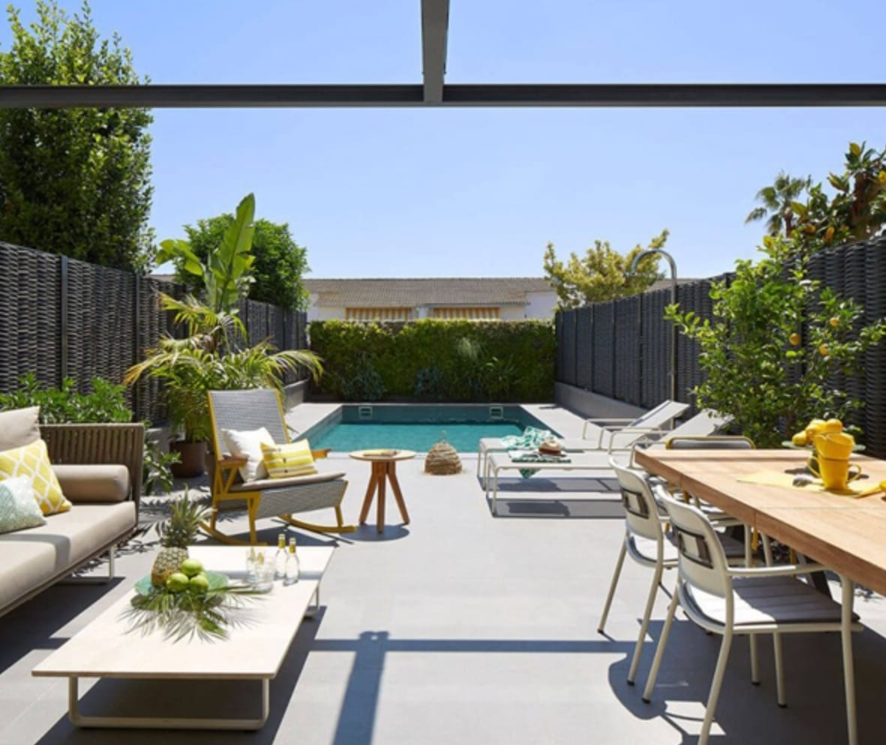

What is outdoor automation ?
Definition :

The extension of smart home technology to outdoor areas, including irrigation systems, landscape lighting, outdoor audio, and security measures.
Benefit :
Creates a truly connected and enjoyable living environment by extending smart features to outdoor spaces, enhancing convenience, comfort, aesthetics, and entertainment options.
Description & Application :
Smart irrigation :
A smart irrigation system with weather-based scheduling, soil moisture sensors, and zone control to optimize watering based on plant needs and weather conditions.
A weather-based irrigation system with smart sprinkler controllers that utilize local weather data, soil moisture sensors, to optimize watering schedules and minimize water waste.
Façade & Landscape Lighting Control :
Smart façade & landscape lighting with customizable colours, scheduling, and motion-activated features to create ambiance, enhance security, and highlight architectural features.
Weatherproof outdoor security cameras strategically placed to monitor the perimeter of the villa, driveways, and entry points, providing 24/7 surveillance.
Pool Management :
A smart pool controller to automate functions like filtration, heating, lighting, and chemical balancing, ensuring optimal water quality and energy efficiency.
Garage Panel Shutters Control :
Enhance convenience, security, privacy with IoT enabled shutter control.
EV Charging Integration :
Dedicated electrical circuit and charging station for convenient and efficient electric vehicle charging at home.